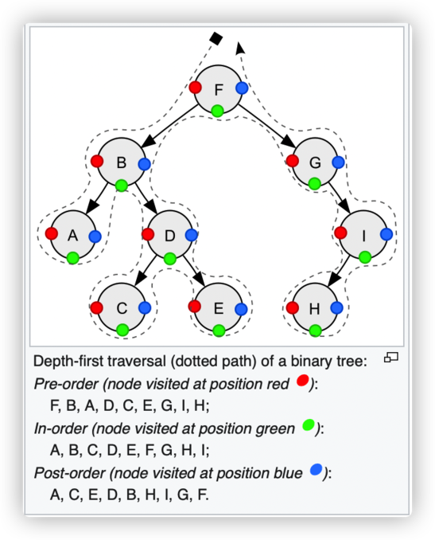

Memo: Data Structure Tree
This is a memo about Tree structure. When dealing with Tree related problems in Leetcode, I try to write concise and clear code.
Define the Structure
For a node in a tree, it can be described as :
type TreeNode struct {
Val int
Left *TreeNode
Right *TreeNode
}
Traversal
There are 3 fundamental types of traversal. They are Pre-Order Traversal, In-Order Traversal, and Post-Order Traversal. Order is to describe the ranking of root node.
- Pre-Order(NLR): Node -> Left -> Right
- In-Order(LNR): Left -> Node -> Right
- Post-Order(LRN): Left -> Right -> Node
See the diagram from Wikipedia about tree traversal: 
Pre-Order
Recursive
Recursive method is pretty straightforward:
func preOrderTraversalRecursive(node *TreeNode) {
if node == nil {
return
}
// do with current node
printNode(node)
// do with left
preOrderTraversalRecursive(node.Left)
// do with right
preOrderTraversalRecursive(node.Right)
}
Iteration
We need a stack when using iteration method.
func preOrderTraversalIteration(node *TreeNode) {
stack := list.New()
curr := node
for stack.Len() > 0 || curr != nil {
if curr != nil {
printNode(curr)
stack.PushBack(curr) // push element in the stack (add element to the back of the list)
curr = curr.Left
} else {
back := stack.Back()
curr = back.Value.(*TreeNode).Right
stack.Remove(back)
}
}
}
In-Order
Recursive
func inOrderTraversalRecursive(node *TreeNode) {
if node == nil {
return
}
// do with left node
inOrderTraversalRecursive(node.Left)
// do with current node
printNode(node)
// do with right node
inOrderTraversalRecursive(node.Right)
}
Iteration
// todo
Post-Order
Recursive
func postOrderTraversalRecursive(node *TreeNode) {
if node == nil {
return
}
// do with left node
postOrderTraversalRecursive(node.Left)
// do with right node
postOrderTraversalRecursive(node.Right)
// do with current node
printNode(node)
}
Iteration
Binary Search Tree(BST, 不是BTS)
Validation
A valid BST should satisfy following requirements: